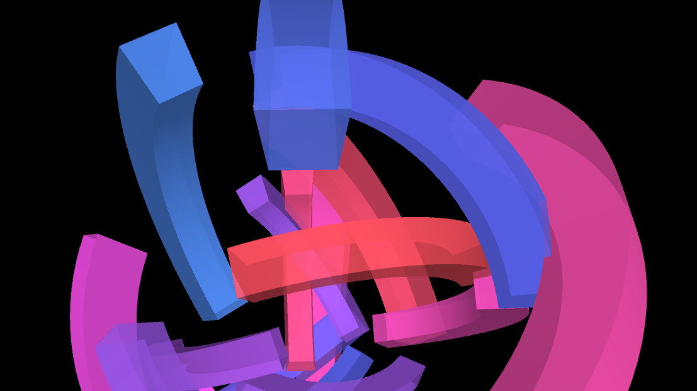
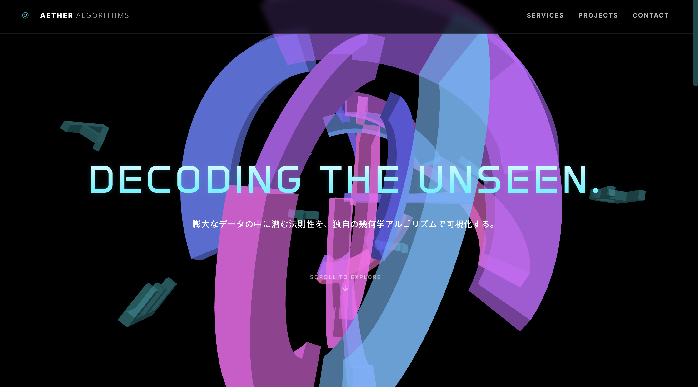

Concept
半透明の厚みのある扇形を複数回転させたら面白いモーションができるのではないかと思い制作しました。
扇形の位置と色が読み込むたびに変化するようにすることで、遊び心も感じられるモーションになっています。
- Role
- Coding / motion / Design
- Tools
- processing
- Period
- 2 weeks (2025.7)
Coding
vertex()関数を使用し頂点の位置を指定することで、思い通りの扇形を描画することができました。

展開
このモーションを背景にしたWebサイトも制作しました。
AIを活用することで、コスト削減に努めた作品となっています。
リロードすることで扇形の色と位置がランダムに変化する仕様は継続されています。ぜひ試してみてください。
